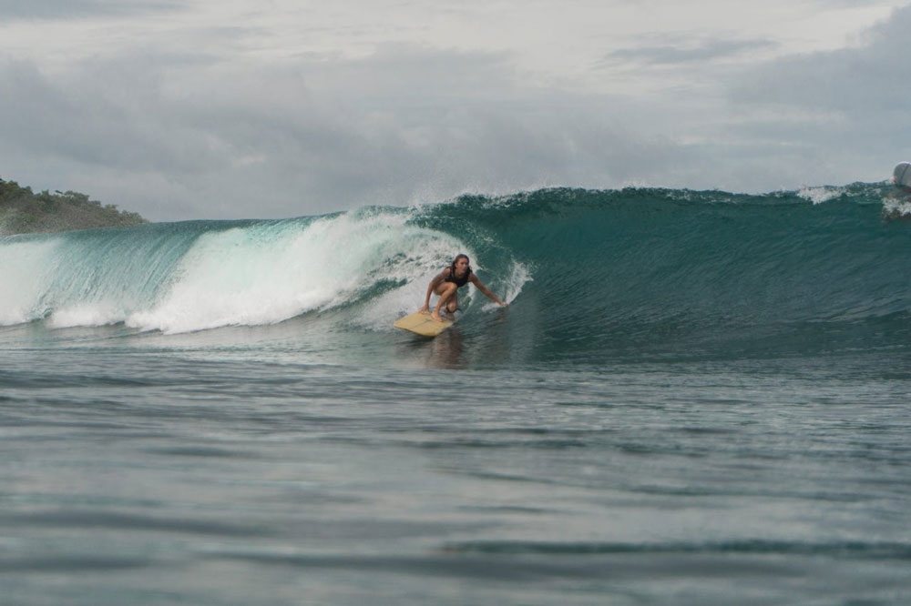
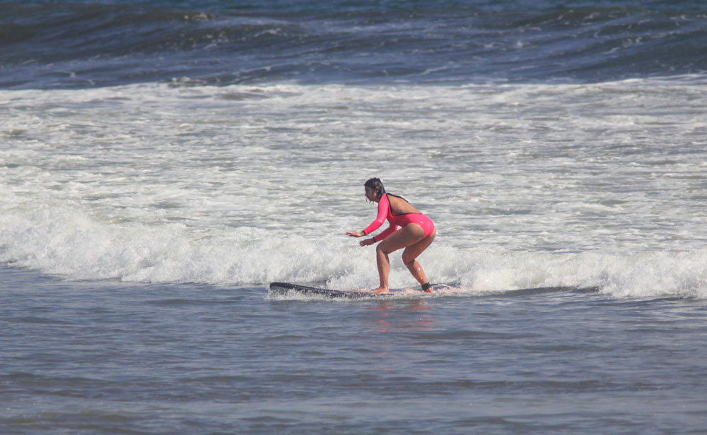
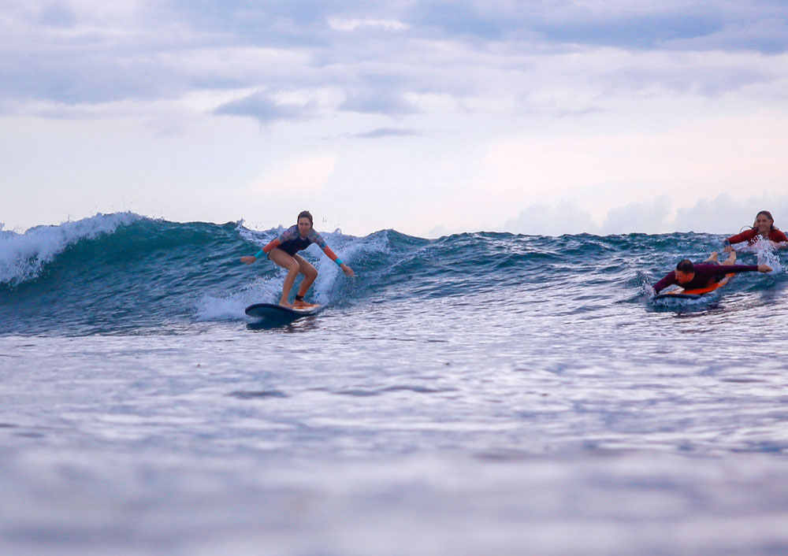
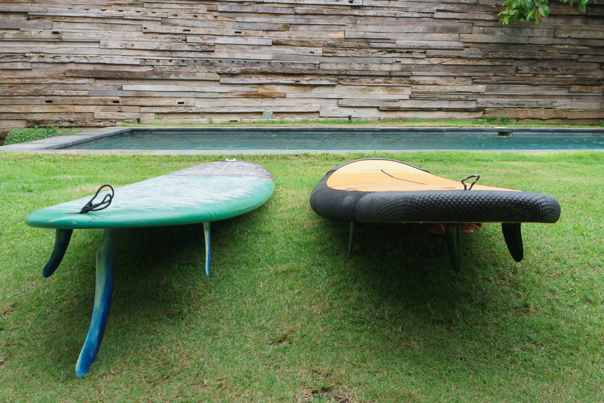
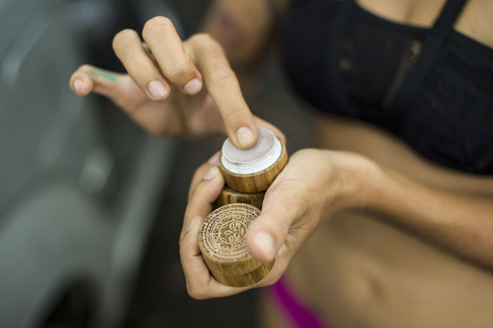
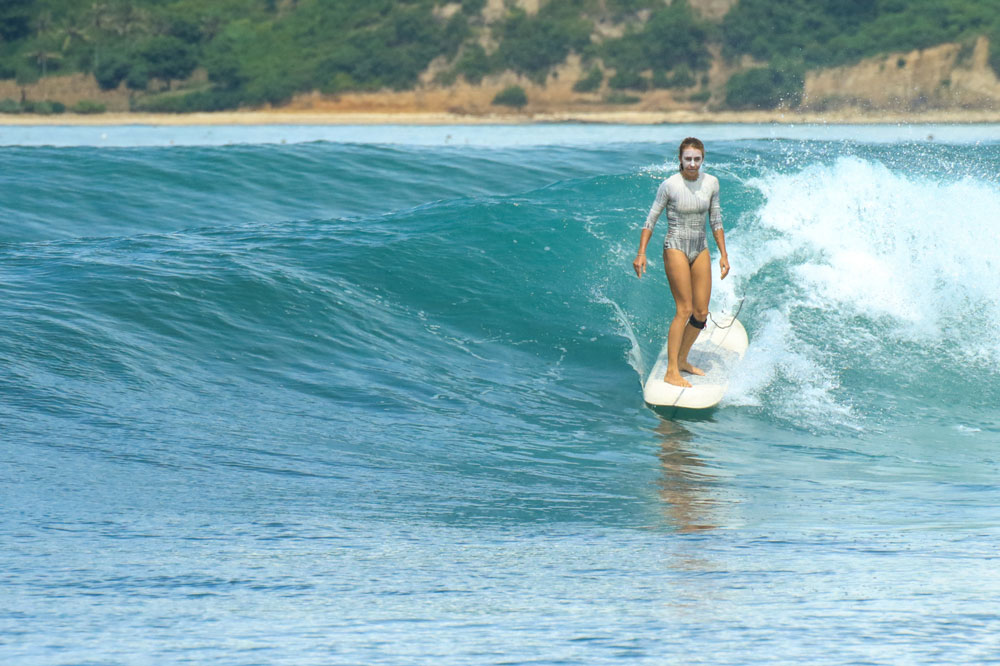
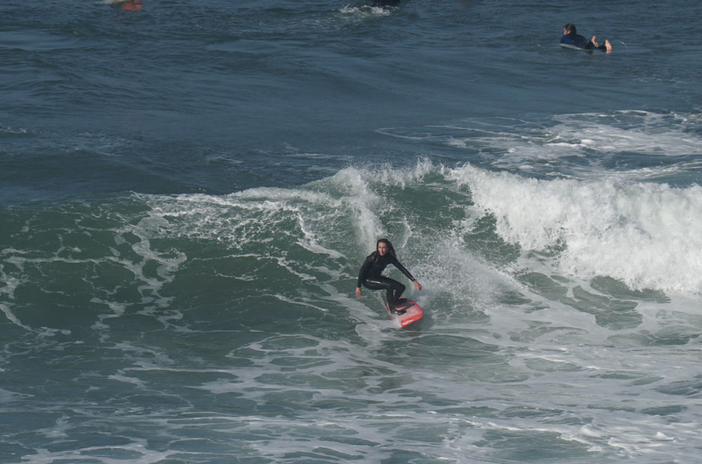

Очень полезный английский сайт Surfedukators.com
Сайт с новостями про серфинг Theinertia.com
Вейврайдинг
How to Surf Like a Pro in 25 Minutes
6 Advanced Surfing Lessons EVERYONE Should Learn
HOW TO SURF: 7 BEGINNER MISTAKES AND HOW TO FIX THEM
HOW TO SURF | 15 TIPS AND EXERCISES TO IMPROVE YOUR SURFING
BIGGEST WAVES EVER SURFED IN HISTORY | LAS OLAS MÁS GRANDES JAMÁS SURFEADAS
Серфер — это человек, который может поймать правильную волну и прокатиться на ней, используя свою ловкость и специальную экипировку. Некоторые серферы специально переезжают к океану, чтобы совмещать серфинг с работой. Кто-то из серферов начинают работать в этой же сфере: держат прокаты оборудования, создают школы и лагеря.
У серфера должно быть свое оборудование или понимание, какую доску нужно брать в прокате. Он знает, как выбрать место и время для катания. Серфер умеет предсказать поведение волны и оказаться в нужном месте, чтобы ее поймать.
Обучение серфингу — это долго. За две недели в серф-лагере можно получить базовые знания, но, чтобы стать серфером, придется приложить еще много усилий. Серфинг — это во многом про навыки, а не знания, а навыки формируются десятками и даже сотнями часов тренировок.
Как проходит обучение
Новички в серфинге проходят два этапа обучения: пену и лайнап.
Пена — это подготовительный этап. Обучение происходит в зоне прибоя, там, где волна уже обрушилась и в сторону берега идет ровная пена. На этом этапе учат ловить пену от волны, вставать на доску и удерживать равновесие.
Лайнап — это место в океане, где серферы сидят в ожидании волны. На лайнапе серфер учится выбирать подходящие волны, ловить их и ехать вдоль стенки, то есть по сформировавшейся наклонной части волны.
Теория
Чтобы кататься самостоятельно, помимо навыков потребуется много теоретических знаний. Например, какие бывают доски и зачем они нужны, как устроен океан, что такое серф-этикет, по каким критериям определять место и время для катания и что делать в экстремальных ситуациях.
Теорию можно выучить самостоятельно по статьям и видеороликам в интернете. Если знаете английский — будет проще, потому что на английском информации больше, чем на русском.
Я советую всем новичкам потратить время на изучение теории, прежде чем приезжать в лагерь или приходить в серф-школу. Инструктор на месте расскажет все основные моменты, но вы будете чувствовать себя увереннее, если подготовитесь.
Практические занятия
С практикой два варианта: пытаться встать на доску самостоятельно или заниматься с инструктором. Когда я начала учиться серфингу в отпуске на Гавайях, я взяла один двухчасовой урок, а оставшиеся дни плавала сама. Именно плавала, а не каталась: навыков, чтобы кататься, после одного занятия еще не хватало.
Когда я переехала на Бали, я не была ограничена сроками, поэтому решила учиться самостоятельно. На то, чтобы поймать первую настоящую волну, у меня ушло три недели почти ежедневных самостоятельных тренировок. На уроках в серф-школе на это уходит в среднем четыре дня.
Вот фотография одной серф-школы на Бали. Это второй лайнап ученицы, всего лишь пятое ее занятие с инструктором:
Положение на доске далеко от идеального, плечи недостаточно развернуты, колени смотрят в разные стороны. Но она едет по волне и не падает, для пятого раза в океане это очень хороший результат. Справа на фотографии видно, как инструктор подталкивает ученика на волну: без толчка первое время ловить волны очень сложно, у большинства людей руки недостаточно сильные.
Стоимость
Чтобы стать серфером, одного урока не хватит. Нужно пройти курс минимум из семи занятий. По моему опыту, за это время вы выучите основы теории и базовую технику. Я рекомендую взять 2—4 урока «пены» по 2 часа каждый, а лайнапов — чем больше, тем лучше, но не меньше 6.
Потом надо будет продолжать тренироваться самостоятельно.
На Бали один урок серфинга в группе стоит 50—60 $ (около 3400 Р). На курс из нескольких занятий школы дают скидку. Семь уроков серфинга в среднем стоят 300 $ (17 000 Р). В стоимость входит прокат оборудования и фото- или видеосъемка. Фотографии делаются не на память, а чтобы вы посмотрели, как стоите на доске и в каком месте волны находитесь. Проще исправить ошибки, если сам их увидишь. Очень важно закрепить правильную технику за время уроков с инструктором. Ну и на память фотографии тоже останутся.
3400 рстоит одно занятие серфингом в группе на Бали
Индивидуальные уроки стоят дороже, но они эффективнее. За два часа занятия в группе каждый ученик проезжает 5—7 волн, а на индивидуальном занятии можно взять 10—12. Урок один на один с инструктором на Бали стоит от 100 $ (5700 р), а если учеников двое, то от 150 $ (8550 р) за двоих.
Доска
В самом начале обучения покупать доску бессмысленно. Новичкам нужна специальная учебная доска — софт-топ, ее лучше брать в прокат.
Софт-топы большие, толстые и более плавучие, чем обычные доски. Еще они немного неповоротливы, зато на них гораздо легче удержать равновесие. Софт-топы покрыты мягкой резиной, и плавники у них гибкие, а не острые — это снижает вероятность травм. Во время обучения иногда ударяешься о доску. Об обычную можно порезаться, а о софт-топ биться безопасно.
 Слева классический лонгборд, твердый и с большими жесткими плавниками из стекловолокна. Справа учебный софт-топ, он даже короче лонгборда, но значительно шире и толще, покрыт мягким материалом, плавники у него небольшие и гибкие, из пластикаЦены на аренду досок зависят от района катания: чем он популярнее, тем дороже. В среднем на Бали цены варьируются от 5 до 10 $ (290—570 р) за два часа.
Когда научитесь стабильно ловить волны на учебной доске, можно переходить на классический лонгборд. Аренда стоит столько же, а если хотите купить свою доску, то для начала советую взять подержанную. На Бали подержанные доски продают в группах в Фейсбуке. Много объявлений есть на серф-спотах, где все катаются.
Цены на подержанные доски начинаются от 300 $ (17 000 р), но нужно очень внимательно выбирать. Бывает, что доска сломалась, ее починили и продают. Кататься на такой доске тяжело: после ремонта она больше весит и становится несбалансированной, на ней сложнее брать волны. К тому же сломанные пополам доски очень легко снова ломаются в том же месте.
Новый лонгборд стоит от 600 $ (34 000 р). Через полгода регулярного катания на лонгборде можно переходить на доску покороче. Схема покупки и цены такие же.

Что еще понадобится
Обязательно нужна специальная солнцезащитная цинковая паста для лица. Во время серфинга ты два часа находишься под прямыми солнечными лучами, которые еще и отражаются от воды.
Обычный солнцезащитный крем, даже водостойкий, быстро стирается с лица, потому что после каждого падения в воду хочется протереть глаза и нос. «Цинка» наносится плотным слоем и не смывается, после серфинга ее приходится стирать салфетками.
В теплой воде можно кататься с голым торсом, но есть риск обгореть на солнце и стереть живот о доску. Лучше купить специальную серферскую майку — лайкру. Такие майки продаются во всех серферских магазинах и стоят от 50 $ (2850 р). Красивые женские лайкры-купальники стоят от 100 $ (5700 р).
Если у вас своя доска, то понадобятся еще аксессуары и расходные материалы:
- Плавники — 70 $ (4000 р).
- Лиш (веревка, которая крепится к ноге) — 50 $ (2850 р).
- Чехол — 30 $ (1700 р).
- Воск — 3 $ (170 р) за упаковку, которой хватает на 2 недели.
Медицинскую страховку я покупаю без отметки об экстремальном спорте, потому что в Индонезии не спрашивают про причину травмы. Можно сказать, что ты просто купался или упал. Я так поступаю из соображений экономии, так как страховку приходится покупать на весь год. Если летишь в отпуск на 2—3 недели, лучше обезопаситься и купить страховку с покрытием серфинга.
Спортивная страховка на две недели на Бали будет стоить 2500—3000 рублей.
Продвинутые уроки
Если вы регулярно катаетесь самостоятельно, полезно раз в несколько месяцев брать 1—2 продвинутых урока с инструктором. Он укажет на ошибки и поможет преодолеть остановку в прогрессе. Продвинутый урок — это индивидуальное занятие, но стоит дороже, от 150 $ (8550 р).
Если инструктор частный и не работает в серф-школе, за фотосъемку придется заплатить дополнительно. Съемка с берега стоит от 50 $ (2850 р).
8550p стоит один продвинутый урок с инструкторомЕсли хочется просто красивых фотографий на память, а не для анализа техники, можно найти фотографа, который снимает с воды, — это стоит от 100 $ (5700p).
Не на Бали
Бали — хорошее место для обучения серфингу, потому что волны тут круглый год, вода теплая, много школ, магазинов и точек проката оборудования. Но учиться можно и в других местах — везде, где есть океан. Главное — попасть в сезон волн.
В Азии кроме Бали у серферов популярны Шри-Ланка, Мальдивы и Филиппины. В Карибском бассейне — Барбадос, Доминиканская республика, Мексика. В США катаются в Калифорнии и на Гавайях. В Европе — в Португалии, Франции, Испании и на Канарских островах. В Африке учиться лучше в Марокко, а опытные серферы, которые не боятся акул, катаются в ЮАР.
11 000 p стоит гидрокостюм, который нужен серферам везде, кроме тропиковЦены на один урок отличаются не сильно:
- Филиппины и Шри-Ланка — 50 $ (2850p).
- Барбадос и Доминикана — от 60 $ (3400p).
- США — 50 $ (2850p).
- Марокко — 40 € (2740p).
- Португалия — 25 € (1700p).
Везде, кроме тропиков, для серфинга нужен гидрокостюм. В серф-школах прокат гидрокостюма входит в стоимость урока. Аренда гидрокостюма для самостоятельного катания в Европе стоит 10 € (685p). Цены на новые гидрокостюмы зависят от толщины. Например, чтобы кататься в воде +17 °C, нужен гидрокостюм 4 мм. В Москве цены на такой начинаются от 11 000 p.
Запомнить
Учиться серфить с инструктором быстрее, безопаснее и эффективнее, чем самостоятельно.
Но и с инструктором учиться долго, особенно с перерывами. Если есть возможность проводить у океана только по две недели два раза в год, готовьтесь, что уроки в школе придется брать каждый раз в течение первых 2—3 лет. Если будете готовы кататься самостоятельно раньше, вы это почувствуете.
Сколько стоит стать серфером на Бали за 2 месяца
| Трата | Стоимость |
|---|---|
| 10 групповых уроков в серф-школе | 22 500 p |
| Аренда доски на 30 дней | 17 000 p |
| Лайкра | 2850p |
| Цинковая мазь | 570p |
| Покупка доски | 17 000 p |
| Плавники | 4000p |
| Лиш | 2850p |
| Чехол | 1700p |
| Воск | 170p |
| Страховка | 11 186 p |
| Итого | 79 826 p |